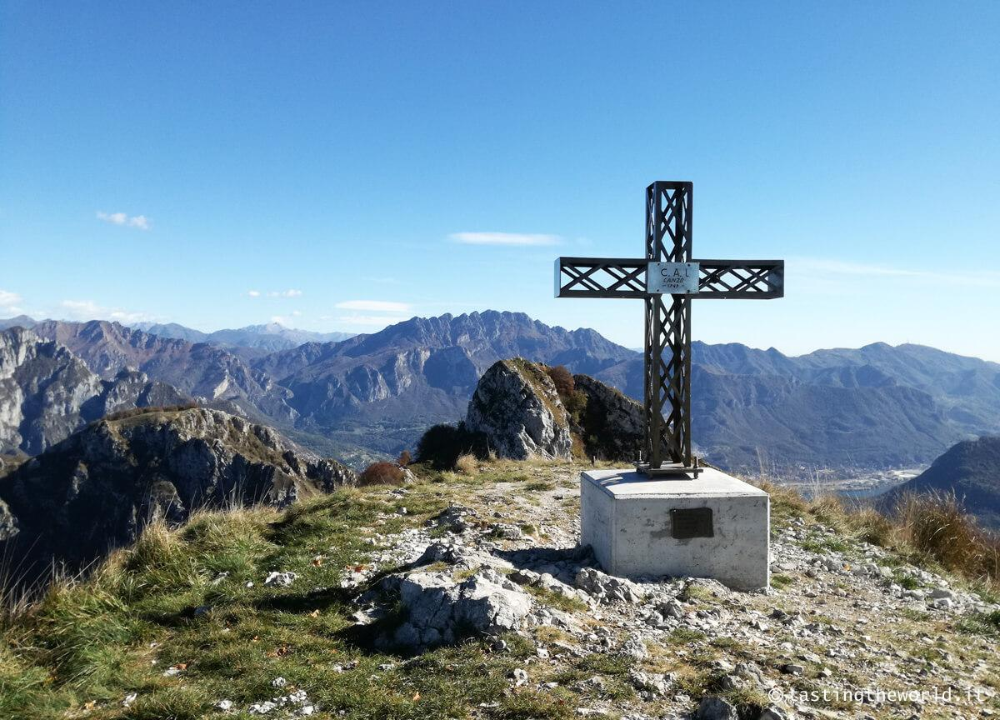
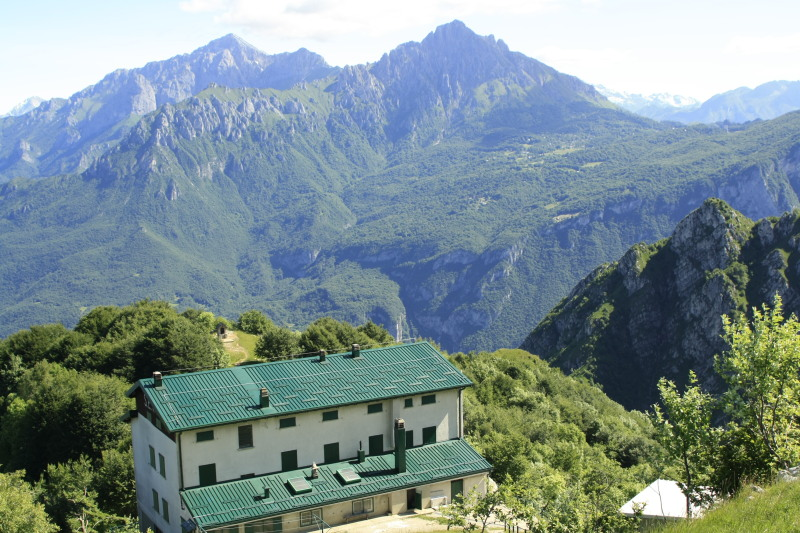

Rifugio SEV - Pianezzo

Il Rifugio SEV si trova nella zona di Pianezzo, a fianco dei Corni di Canzo, i lavori terminarono nel 1964 grazie al contributo di numerosi soci volontari. La struttura, un’ottima costruzione a due piani che domina un ampio e caratteristico paesaggio, è aperta tutti i sabati pomeriggio e le domeniche, oltre che durante il periodo estivo del mese di Agosto e tutti i mercoledì da marzo ad ottobre e ha una disponibilità di 75 posti letto.
Dall’ampia terrazza che corre lungo il perimetro esterno si può ammirare un panorama superbo e solenne che spazia dalle lontane Alpi alla ramificazione del Lago di Como, alle Grigne, al Resegone e al monte Moregallo nonchè sulle città di Lecco e Valmadrera.
Il rifugio è raggiungibile da diversi sentieri oppure con comoda mulattiera fino ad arrivare alla splendida terrazza affacciata sul Lago di Como e Lecco.
Inoltre con poca fatica e tempo facilmente raggiungili le tre cime dei corni di Canzo e del Monte Moregallo.
La cucina offre ricchi pranzi a base di prodotti locali e della tradizione.